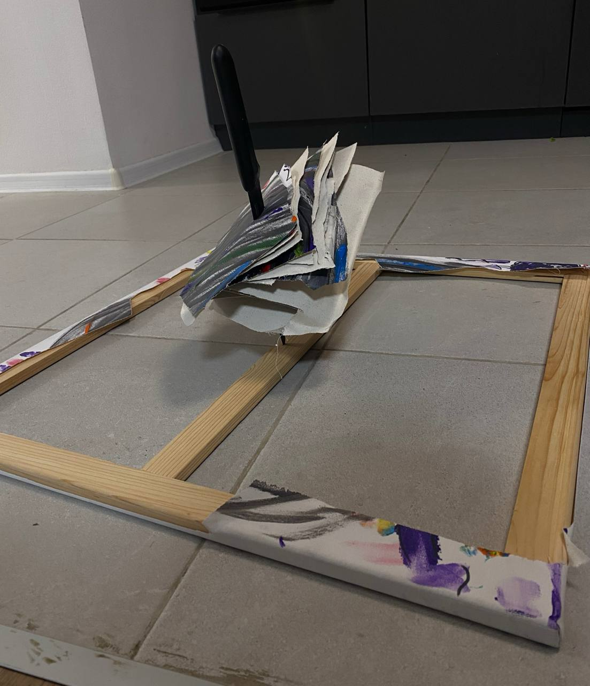
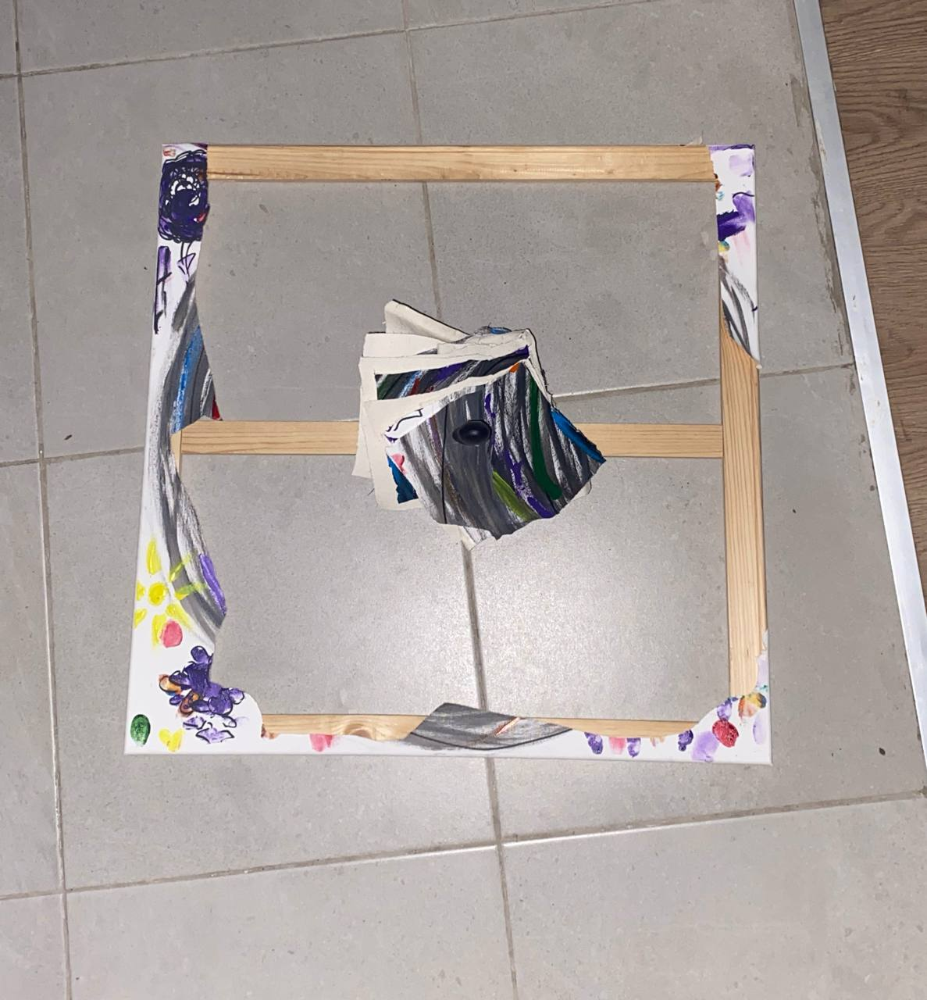

СМЕРТЕЛЬНОЕ ИСКУССТВО
Закзала убийство собственного творения???
В Екатеринбурге было совершено убийство. Неизвестная ранее работа Алисы М. найдена расчлененной.

Изображение №1. Фото с места событий.
В сеть слили аудио, записанное в момент совершения преступления. На нем четко слышно, как сама художница дает таинственному киллеру задание уничтожить холст:
«Мне без разницы, как ты это сделаешь - главное, чтобы этого не было»
Звуковая дорожка №1. Аудиозапись с места событий.
Соучастника этого ужасного преступления найти не удалось. Убийца не оставил никаких следов и скрылся в неизвестном направлении.

Изображение №2. Фото с места событий.
Сама Алиса М. не дает никаких показаний. Некоторые опрашиваемые утверждают, что художница давно испытывала негативные эмоции к этой картине, несколько раз наносила ей физические увечья и не желала, чтобы люди когда-либо увидели ее. Сторонние источники сообщают обратное: якобы Алиса питала нежные чувства к этому холсту, так как создавала его совместно с близкими людьми.
О продолжении этого дела и других новостях читайте в телеграмм-канале:
https://t.me/shtodelaetLisa